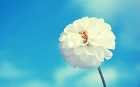
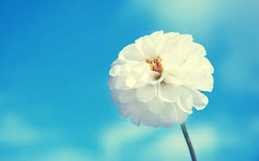
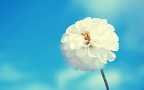
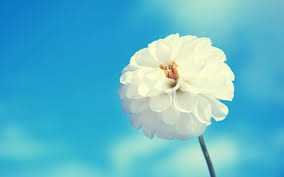

CSS: { display: inline; }


 




A flower, sometimes known as a bloom or blossom, is the reproductive structure found in flowering plants (plants of the division Magnoliophyta, also called angiosperms). The biological function of a flower is to effect reproduction, usually by providing a mechanism for the union of sperm with eggs. Flowers may facilitate outcrossing (fusion of sperm and eggs from different individuals in a population) or allow selfing (fusion of sperm and egg from the same flower). Some flowers produce diaspores without fertilization (parthenocarpy). Flowers contain sporangia and are the site where gametophytes develop. Flowers give rise to fruit and seeds. Many flowers have evolved to be attractive to animals, so as to cause them to be vectors for the transfer of pollen.
The essential parts of a flower can be considered in two parts: the vegetative part, consisting of petals and associated structures in the perianth, and the reproductive or sexual parts. A stereotypical flower consists of four kinds of structures attached to the tip of a short stalk. Each of these kinds of parts is arranged in a whorl on the receptacle.